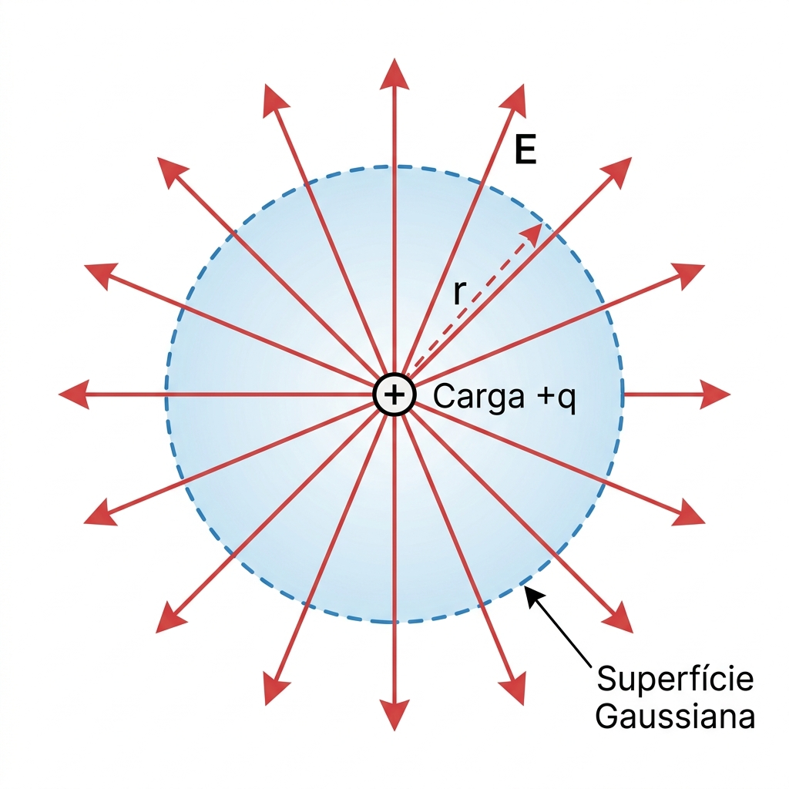

Anatomia de Cada Equação — Variável por Variável
É fundamental não apenas decorar, mas entender a "anatomia" de cada equação e o que cada letra representa. Muitas vezes, a banca tenta confundir o aluno usando variáveis ligeiramente diferentes. Aqui está o apanhado completo, traduzido para a linguagem de quem precisa resolver a prova.
Capítulo 1
Eletrostática & Lei de Gauss
Foco: Cargas paradas gerando campo elétrico ao seu redor.

Fluxo Elétrico (A Definição)
Mede a "quantidade" de linhas de campo elétrico que atravessam e furam uma superfície específica.
ΦE Fluxo elétrico (N·m²/C)
E⃗ Vetor do Campo Elétrico
dA⃗ Vetor área (perpendicular à superfície, apontando para fora)
Lei de Gauss (A Fórmula Mãe) ⭐
Relaciona o fluxo total numa superfície fechada (imaginária) diretamente com a carga que está presa lá dentro. Salva a vida em geometrias simétricas.
qenv Carga líquida envolvida pela superfície gaussiana (C)
ε0 Permissividade do vácuo (8,85 × 10−12 C²/N·m²)
Carga Pontual (Lei de Coulomb)
Calcula a força do campo gerado por uma única partícula. O campo enfraquece com o quadrado da distância.
q Carga da partícula (C)
r Distância da partícula até o ponto de interesse (m)
Fio Longo Infinito (Simetria Cilíndrica)
Campo gerado por um fio reto e comprido. Note que aqui o campo cai com r (e não com r²).
λ Densidade linear de carga (Carga / comprimento, em C/m)
r Distância perpendicular do fio até o ponto (m)
Plano Infinito (Não Condutor)
Campo gerado por uma chapa gigante de carga. O campo é uniforme; não importa a distância r, ele tem sempre o mesmo valor!
σ Densidade superficial de carga (Carga / área, em C/m²)
Superfície de um Condutor (Metal em Equilíbrio)
Campo logo acima da superfície de um pedaço de metal. O campo dentro do metal é zero.
⚠️ Atenção: Compare com o Plano — a diferença é o fator 2. Metal não tem campo "por dentro", então toda a contribuição sai por um lado só.
Capítulo 2
Distribuições Específicas de Carga
Foco: Fórmulas prontas para calcular o campo no eixo de simetria (geralmente chamado de eixo z) de formatos específicos.
Dipolo Elétrico (no eixo z, muito longe)
Campo gerado por duas cargas iguais e opostas (+q e −q) separadas por uma pequena distância, visto de muito longe. Cai bruscamente com z³.
p Momento de dipolo: p = q · d (C·m)
d Distância entre as duas cargas
z Distância do centro do dipolo (m)
Anel de Cargas (no eixo central z)
Campo ao longo da linha que passa pelo centro de um anel. No centro exato (z=0), o campo é zero (as forças anulam-se).
q Carga total espalhada no anel (C)
R Raio do anel (m)
z Distância do centro do anel (m)
Disco de Cargas Maciço (no eixo z)
Campo ao longo do eixo de um disco (como se fosse um CD cheio de carga).
σ Densidade superficial de carga do disco (C/m²)
R Raio do disco (m)
💡 Dica: Quando R → ∞, a fórmula converge para E = σ/(2ε0), que é exatamente o plano infinito!
Capítulo 3
Campos Magnéticos & Lei de Ampère
Foco: Cargas em movimento (correntes) gerando campos magnéticos.


Lei de Biot-Savart (Força Bruta) ⭐
A equação universal para calcular o campo magnético de qualquer formato de fio, cortando o fio em pedacinhos ds⃗ e integrando.
dB⃗ Pedacinho de campo magnético (Tesla, T)
μ0 Permeabilidade do vácuo (4π×10−7 T·m/A)
i Corrente elétrica (A)
ds⃗ Vetor do pequeno segmento de fio
r̂ Vetor unitário do fio para o ponto alvo
Lei de Ampère (O Caminho Fácil) ⭐
Permite achar o campo B de forma rápida em situações de alta simetria (fios retos, solenoides, toroides), fazendo um caminho fechado (Amperiana).
ienv Corrente total que fura/atravessa a área do caminho fechado (A)
Fio Longo e Reto
O módulo do campo magnético circulando ao redor de um fio infinito.
r Distância radial a partir do centro do fio (m)
Força entre Dois Fios Paralelos
Fios com correntes no mesmo sentido atraem-se; sentidos opostos repelem-se.
F/L Força por unidade de comprimento (N/m)
i1, i2 Corrente em cada fio (A)
d Distância separando os fios (m)
Espira Circular (no centro exato)
Campo concentrado bem no meio de um anel de corrente. Se for meia espira (semicírculo), divida por 2.
R Raio da espira (m)
Solenoide Ideal (Bobina Longa)
Campo magnético forte e uniforme no interior de uma bobina comprida.
n Densidade de espiras = N/L (espiras/metro)
N Número total de voltas
L Comprimento do solenoide
Toroide (Bobina em formato de Donut)
Campo confinado dentro do núcleo de um toroide. O campo não é uniforme — varia dependendo se está mais perto da borda interna ou externa.
N Número total de espiras
r Raio (distância do centro do "donut" até o ponto dentro do tubo)
🧭 A Regra da Mão Direita
- Polegar: Sentido da Corrente (i)
- Dedos a envolver: Sentido circular do Campo Magnético (B)
Para o Produto Vetorial (ds⃗ × r̂): aponte os dedos na direção de ds⃗, feche-os na direção de r̂; o polegar aponta na direção de dB⃗.
Capítulo 4
Indução Eletromagnética
Foco: Como campos magnéticos que variam no tempo criam energia/voltagem.

Fluxo Magnético
Mede a quantidade de campo magnético que passa por dentro de uma área (como uma espira).
ΦB Fluxo Magnético (Weber, Wb)
💡 Dica Prática: Se o campo for uniforme, a integral vira apenas B · A · cos(θ), onde θ é o ângulo entre o campo e a normal da área.
Lei de Faraday e Lenz ⭐
A equação principal! Para gerar tensão, o fluxo magnético tem que mudar (derivada ≠ 0). Fluxo constante = sem tensão.
ε Força Eletromotriz Induzida (Volts)
N Número de voltas (se for 1 espira, N=1)
dΦB/dt Derivada do fluxo em relação ao tempo
Sinal (−): Representação da Lei de Lenz — a tensão gerada sempre se opõe à causa que a originou.
FEM de Movimento (Barra a deslizar em trilhos)
Calcula a tensão instantânea gerada quando você arrasta uma barra de metal através de um campo magnético constante.
B Campo magnético (T)
L Comprimento da barra mergulhada no campo (m)
v Velocidade da barra (m/s)
⚡ Checklist de Prova — Indução
- Identifique o que está a mudar (B, A, ou θ?)
- Escreva ΦB = B·A·cos(θ) em função do tempo
- Derive em relação a t: dΦ/dt
- Multiplique por −N
- Use Lei de Lenz para definir o sentido da corrente